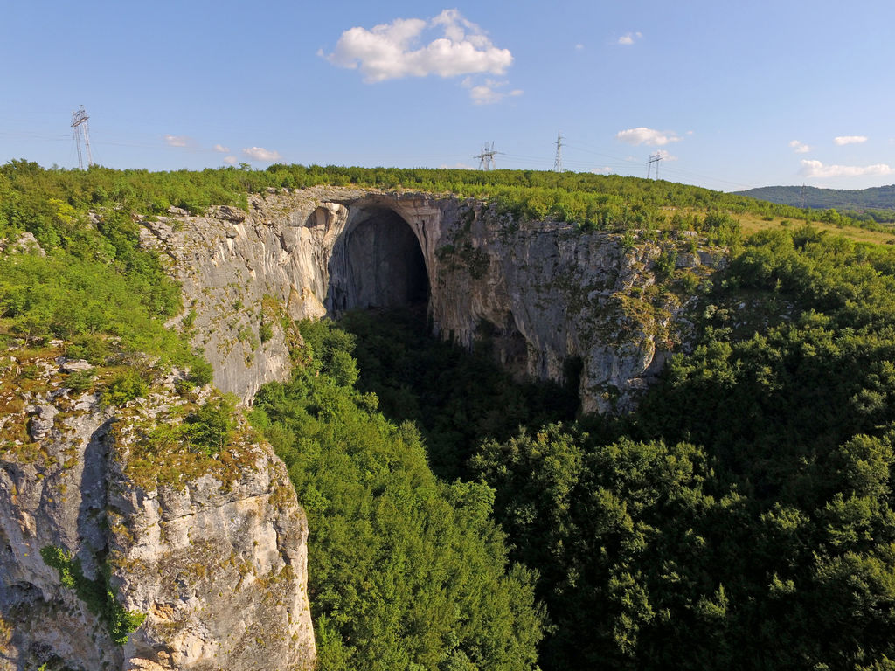
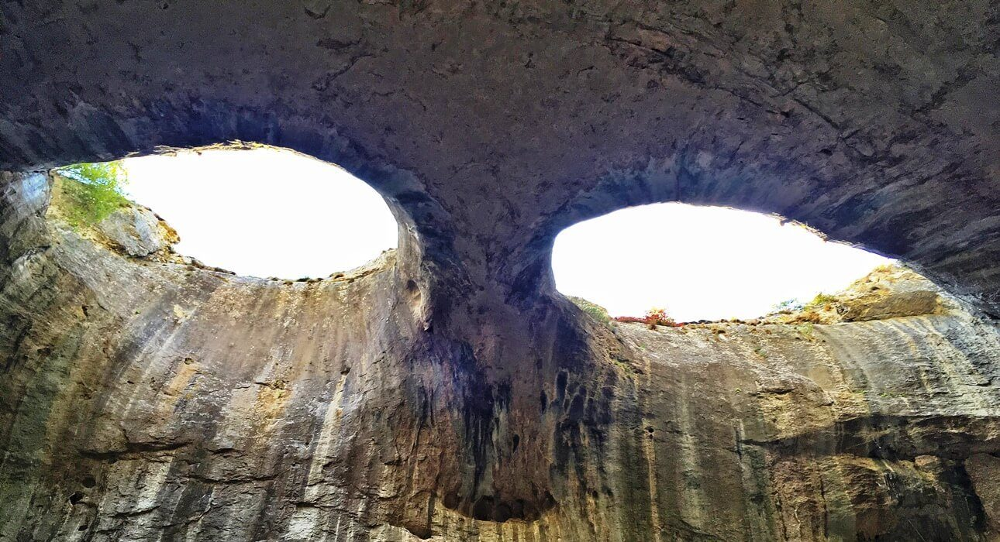
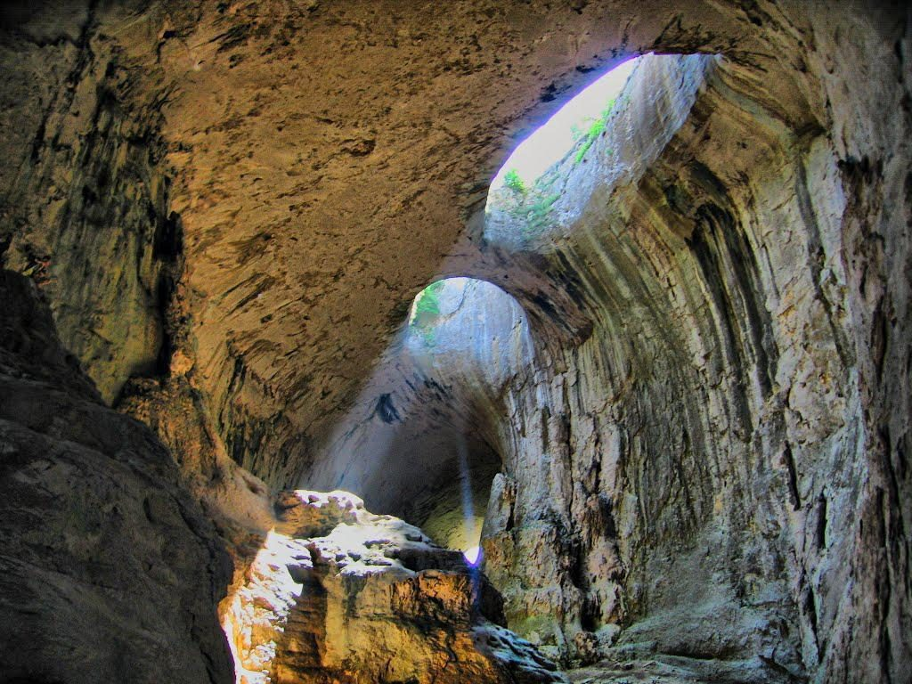

Проходна е една от най-известните и леснодостъпни пещери в България. Намира се на 2 км от с. Карлуково и на 112 км от София.
Пещерата представлява естествен скален мост с дължина 262 м. Има 2 входа – голям и малък. От малкия вход с височина около 35 м тръгва пътечка, която преминава през цялата пещера и излиза през големия вход (най-големия пещерен свод в България – 45 м).
Проходна е естествено осветена от огромните входове и от естествените отвори в тавана - “окна”. Именно “окната” правят пещерата уникална. Разположени едно до друго, с еднаква бадемовидна форма, окната удивително приличат на огромни очи, които сякаш се взират в посетителите. Неслучайно местното население ги нарича “Очите на Господ”, а понякога и “Очите на Дявола”. Гледани под определен ъгъл, дори наподобяват лице, свело поглед надолу, а при влажно време от тях сякаш се стичат “сълзи”. Изправен пред този природен феномен, човек остава удивен и леко развълнуван – невероятната симетрия и разположение на окната навява страхопочитание и чувство за мистерия. Пещерата е обявена за природна забележителност през 1962 г. В нея са снимани няколко български и чуждестранни филми. Един от тях е “Време разделно” (1987 г.).
